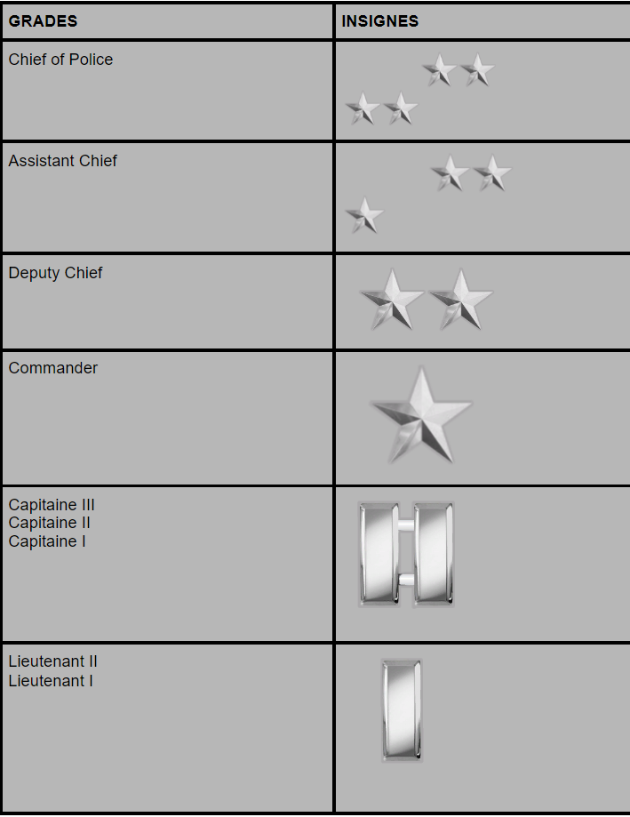
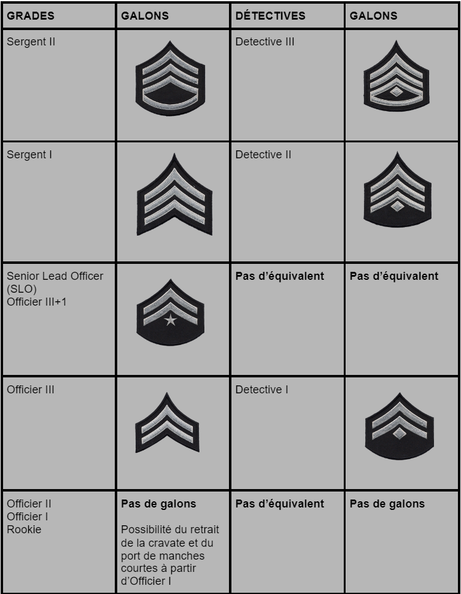

GRADES & FONCTIONS

Police Officer
Les officiers constituent le plus grand nombre d'agents assermentés du département. Le grade d'officier de police est divisé en quatre grades d'avancement : Officer I, II, III, III+1. L'Officer I est un officier en formation qui passe automatiquement au grade d'Officer II lorsqu'il a terminé avec succès sa période de formation. Un officier de police peut être affecté à une patrouille en voiture, une patrouille à vélo, une moto ou une unité spécialisée telle que l'unité K-9 ou Traffic. Lorsqu'une recrue est diplômée de la Police Academy, elle est affectée à un poste et placée sous la supervision d'un agent de grade supérieur, normalement un Officer II ou III. Un officier de police en formation affecté à une patrouille remplit des fonctions de base telles que :
- Intervenir sur les lieux d'un crime ou d'un accident
- Interroger des suspects, des témoins
- Rédaction de rapports
- Répondre aux appels radio
- Surveillance de toute activité suspecte
- Visiter les entreprises ouvertes telles que les banques, les marchés, les grands magasins, les stations-service et autres pour établir un rapport avec les propriétaires
- Arrestation des suspects , collecte des preuves et transport vers le service de police compétent
- Répondre aux questions des citoyens et des visiteurs
- Mener de nombreuses autres activités pour soutenir la philosophie de police de proximité
Police Sergeant
Le grade de Police Sergeant est attribué aux Police Officer III+1 suite à un test d'environ deux semaines sur le terrain sur décision du Command Staff. Ce grade est divisé en deux grades d'avancement : Police Sergeant I, et II. Le Sergeant II accomplit des tâches plus complexes et de plus haut niveau. Les Sergents sont amenés à superviser des secteurs de patrouille bien précis. Ils répondent à différents appels, comme des scènes de crimes ou des appels spécifiques de la part des officiers.
Un sergent peut être Watch Commander pendant son service. En cette qualité, le sergent supervise l'intégralité de son district, les patrouilles et les officiers ; examine et approuve tous les rapports d'arrestation et chaque suspect placé en détention lui est présenté ; répond aux scènes de crime à la demande des officiers ; tient les superviseurs informés des questions qui les concernent et remplit d'autres fonctions connexes.
Le travail de supervision est complexe et nécessite beaucoup de compétences, il consiste au plus souvent à :
- Superviser des officiers
- Superviser des opérations à haut risque dans différentes zones.
- Éplucher la plupart des rapports d'interventions écrits par les officiers.
- Répondre à des appels de renfort sur le terrain ou un superviseur est demandé.
- Accueillir et répondre aux questions des citoyens, les guider.
- Accompagner et diriger les officiers en probation.
Police Lieutenant
Le grade de lieutenant est attribué à un officier chargé de diverses fonctions administratives et de maintien de l'ordre au sein du service et est réparti en deux grades : Lieutenant I et II. Les lieutenants I sont généralement affectés en tant que Watch Commander ou lieutenants "administratifs". Le lieutenant affecté à une patrouille est chargé de superviser les sergents, les officiers et les détectives. À ce titre, le lieutenant est l'assistant du capitaine. Plus précisément, le lieutenant assure un déploiement approprié et suffisant des officiers en fonction des tendances de la criminalité dans un secteur ; il répond aux scènes de crimes graves tels que les fusillades impliquant des officiers, des homicides, des vols et des cambriolages importants et il tient le capitaine informé des questions préoccupantes.
Le lieutenant veille à la formation appropriée et adéquate des officiers, à l'inspection du personnel, de l'équipement et des installations afin de garantir la conformité avec les politiques et les procédures du LSPD, mène des entretiens avec le personnel assermenté et civil, assiste aux réunions communautaires afin de promouvoir les objectifs et les missions du département et les programmes de sécurité communautaire, intervient à l'Académie de police et remplit d'autres fonctions connexes.
Police Captain
Le grade de capitaine est divisé en trois niveaux d'avancement : Captain I, II et III. Chaque niveau supérieur assume des responsabilité plus complexes et plus difficiles dans le cadre de son affectation. En tant que plus haut gradé dans un poste de police, le capitaine est responsable des tâches suivantes : Superviser les fonctions des officiers et des détectives pour s'assurer qu'ils respectent les politiques, les procédures, les règlements et les normes du LSPD ; maintenir la liaison avec la hiérarchie, le Chief of Police, le maire de Los Santos.
En plus des tâches ci-dessus, les capitaines affectés à des divisions spécialisées telles que la Gangs and Narcotics Division, l'Investigation Division ou la Traffic Division sont responsables des tâches de supervision et d'accompagnement. En outre, un capitaine effectue des tâches administratives telles que l'examen des rapports importants ; l'embauche d'officiers dans son poste ; des interventions à la Police Academy, etc.
|

|

|